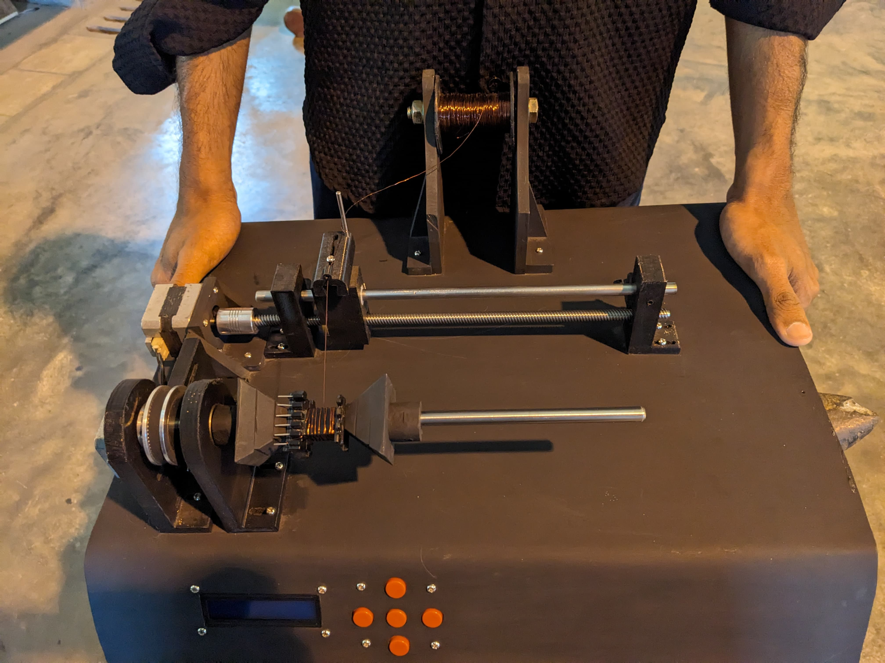
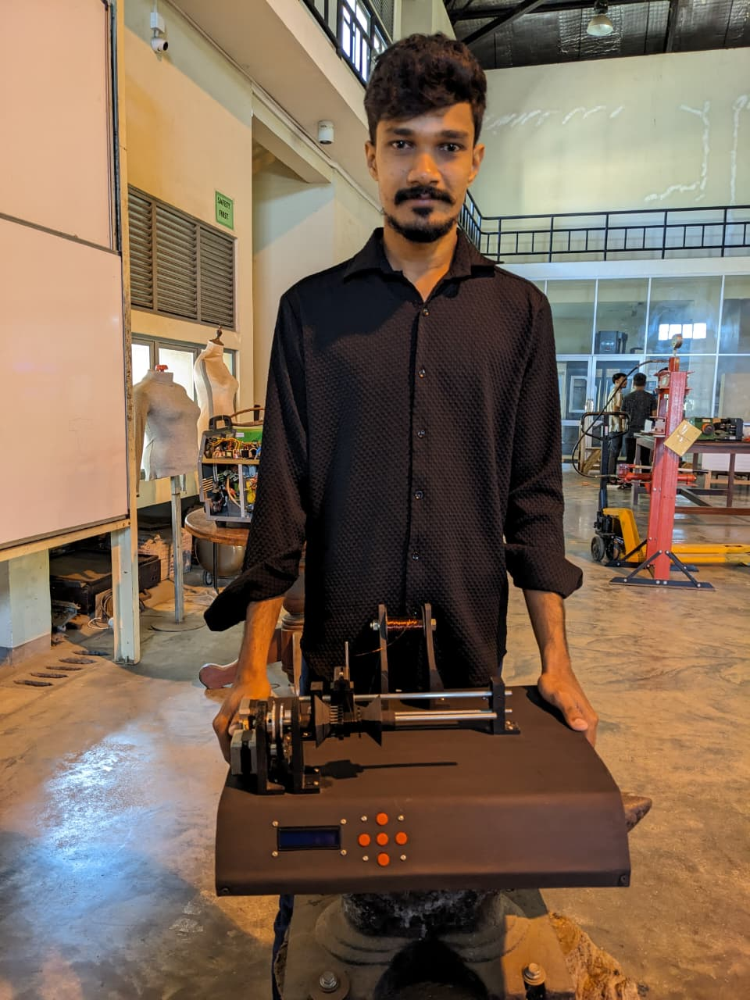
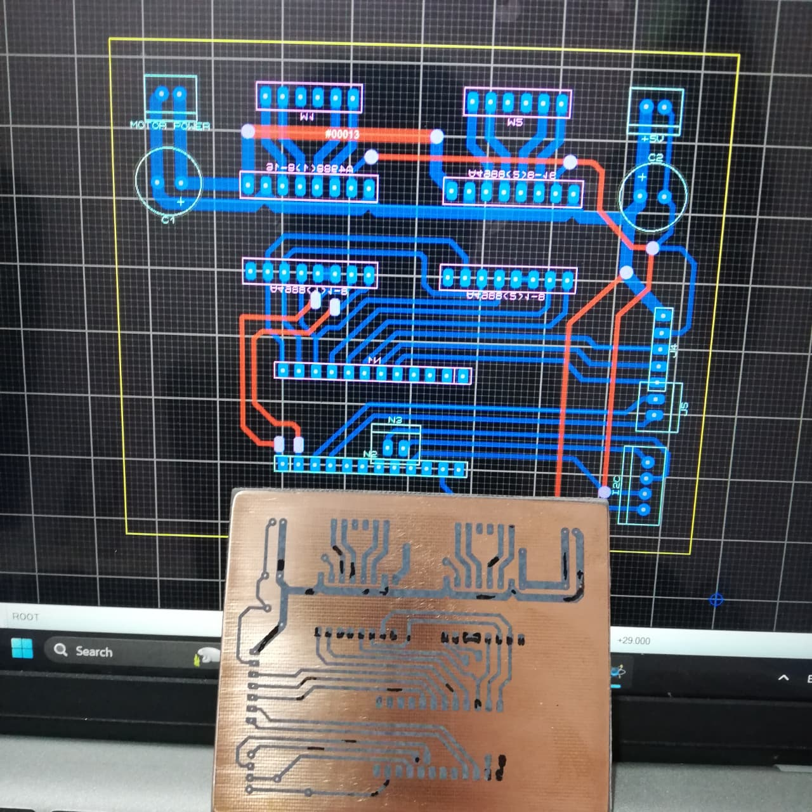
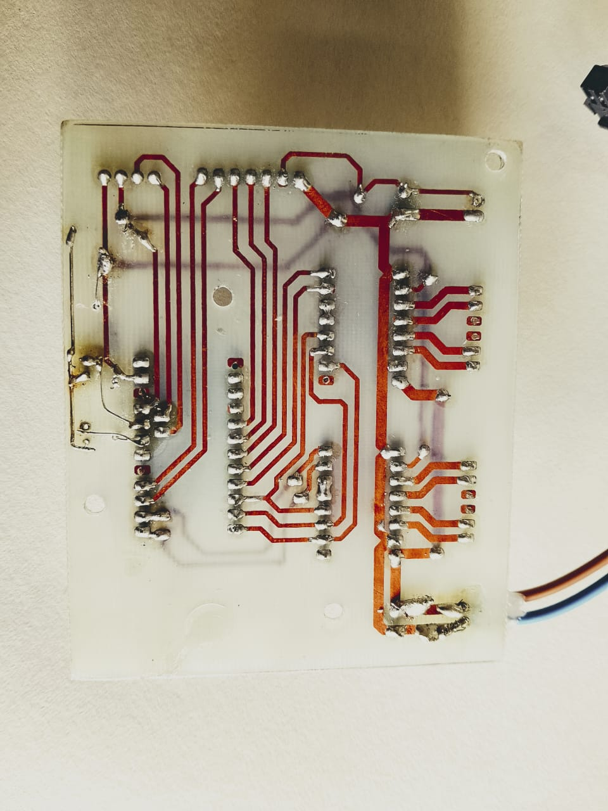
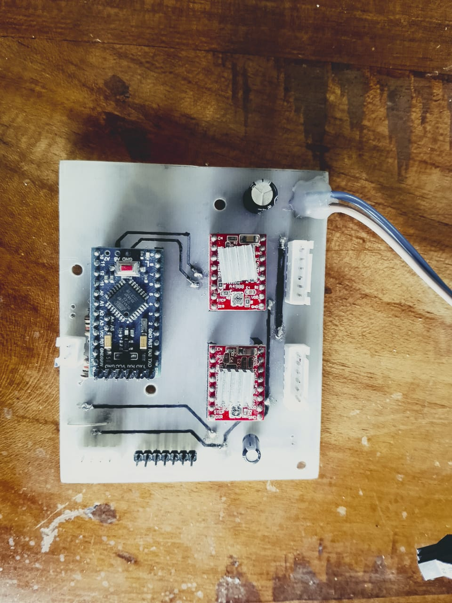

Automatic Coil Winding Machine
An Arduino Pro Mini based coil winding machine with a 16x2 LCD menu and 5-button navigation. Uses two stepper motors for spindle rotation and wire guide movement, with a custom PCB for A4988 drivers and clean wiring.
Key Features
- LCD menu system (16x2 display) with 5-button navigation for setup and control.
- Two stepper motors: one for coil/spindle rotation, one for wire guide/traverse movement.
- Adjustable settings: target turns, gauge, and start/stop control.
- Custom PCB for mounting A4988 drivers and other components for reliable connections.
- Designed for clean wiring and easier maintenance compared to breadboard wiring.
How It Works
The Arduino Pro Mini controls two A4988 stepper drivers. The first stepper motor rotates the coil/spindle to create turns. The second stepper motor moves a wire guide mechanism to distribute the wire evenly across the bobbin width. A 16x2 LCD shows the current mode and parameters, while 5 buttons allow menu navigation and control actions.
Hardware & Electronics
Core Components
- Arduino Pro Mini (main controller)
- 16x2 LCD (menu + live data)
- 5 push buttons (menu navigation + select/back)
- 2 × Stepper motors (spindle + traverse)
- 2 × A4988 stepper driver modules
PCB Design
- Designed a PCB to mount A4988 drivers securely
- Included connectors for motors, power input, LCD, and buttons
- Improved reliability, reduced loose wiring, and made debugging easier
- Allows easy replacement of driver modules
Software & Menu
The firmware is structured around a simple menu system on the 16x2 LCD. The user can set winding parameters using the 5-button navigation, then start the winding cycle. During operation, the display shows current turns and system status.
Menu Examples
Results & Improvements
- Achieved consistent coil winding with controlled turn count.
- Traverse mechanism helps distribute wire evenly (reduced overlap).
- PCB improved stability and reduced wiring issues.
- Future improvements: add limit switches for guide axis, encoder feedback, better enclosure, and improved UI.
Photos & Video






Code Snippet
#include
#include
#include
LiquidCrystal_I2C lcd(0x27,16,2);
unsigned long prevtime = millis();
//Switch
int sw1 = A3;
int sw2 = A2;
bool SL = 0;
bool SR = 0;
bool prepare = LOW;
bool winding = LOW;
//motors
const int ms1 = 9;
const int ms2 = 8;
const int ms3 = 7;
#define STEPS_PER_REV 200
#define motorInterfaceType 1
AccelStepper stepper1(motorInterfaceType, 10, 11);
AccelStepper stepper2(motorInterfaceType, 6, 5);
//Input & Button Logic
const int numOfInputs = 5;
const int inputPins[numOfInputs] = {3,12,4,2,13};
int inputState[numOfInputs];
int lastInputState[numOfInputs] = {LOW,LOW,LOW,LOW,LOW};
bool inputFlags[numOfInputs] = {LOW,LOW,LOW,LOW,LOW};
long lastDebounceTime[numOfInputs] = {0,0,0,0,0};
long debounceDelay = 5;
bool Setup = LOW;
bool pres = HIGH;
bool Edit = LOW;
int choice = 0;
//increment
const int numin = 6;
const float Num[numin] = {0.01,0.1,1,10,100,1000};
int Num2[numin] = {2,1,0,1,2,3};
int count = 2;
//winding
int turns = 5;
int turned = 0;
int rem_turns = 0;
float width = 17.00;
float gauge = 0.25;
int digitlen = 0;
float int_point = 5;
float int_pointpev = 10;
int Speed1;
int Speed2 = 2400;
int currentpos = 0;
const int STEPS_PER_1mm = 26;
int stepofwidth;
int stepofwind;
bool showdet = LOW;
bool stopmotor = LOW;
bool beginwind =LOW;
bool setpos = LOW;
//LCD Menu Logic
const int numOfScreens = 3;
int currentScreen = 0;
int maxscreen = 6;
String screens[numOfScreens][2] = {
{"Turns","turns"},
{"Width", "mm"},
{"Gauge","mm"},
};
float parameters[numOfScreens];
byte arrow1[] = {
B10000,
B11000,
B11100,
B11110,
B11110,
B11100,
B11000,
B10000
};
byte arrow2[] = {
B00001,
B00011,
B00111,
B01111,
B01111,
B00111,
B00011,
B00001
};
byte plusorminus[] = {
B00100,
B00100,
B11111,
B00100,
B00100,
B00000,
B11111,
B00000
};
byte ten[] = {
B00000,
B00000,
B00000,
B00000,
B10111,
B10101,
B10101,
B10111
};
byte teni[] = {
B10001,
B01001,
B00101,
B00010,
B00001,
B10111,
B10101,
B10111
};
byte Circule[] = {
B00000,
B00000,
B01110,
B01110,
B01110,
B01110,
B00000,
B00000
};
void setInputFlags();
void resolveInputFlags();
void inputAction(int input);
void showmenu();
void showdetwinding();
int getCursorPosition(int a);
void Reset();
void Setposition();
void beginwinding();
void setup(){
for(int i = 0; i < numOfInputs; i++) {
pinMode(inputPins[i], INPUT);
digitalWrite(inputPins[i], HIGH); // pull-up 20k
}
Serial.begin(9600);
lcd.init();
lcd.backlight();
lcd.createChar(0, arrow1);
lcd.createChar(1, arrow2);
lcd.createChar(2, plusorminus);
lcd.createChar(3, ten);
lcd.createChar(4, teni);
lcd.createChar(5, Circule);
stepper1.setMaxSpeed(1000);
stepper2.setMaxSpeed(1000);
pinMode(ms1, OUTPUT);
pinMode(ms2, OUTPUT);
pinMode(ms3, OUTPUT);
digitalWrite(ms1, LOW);
digitalWrite(ms2, LOW);
digitalWrite(ms3, LOW);
delay(200);
}
void loop(){
SL = digitalRead(sw1);
SR = digitalRead(sw2);
if(prepare == LOW){
Reset();
}else{
if(SL == 1){
stepper1.moveTo(stepper1.currentPosition());
}
if(SR == 1){
stepper1.moveTo(stepper1.currentPosition());
}
}
setInputFlags();
resolveInputFlags();
if(choice< 0){
choice= 0;
}
if(choice> 5){
choice= 5;
}
if(choice == 3 && Edit == HIGH){
Setposition();
}
if(Setup == HIGH && pres == HIGH){
showmenu();
}
if(setpos){
Setposition();
}
if(beginwind){
beginwinding();
}
}
void setInputFlags() {
for(int i = 0; i < numOfInputs; i++) {
int reading = digitalRead(inputPins[i]);
if (reading != lastInputState[i]) {
lastDebounceTime[i] = millis();
}
if ((millis() - lastDebounceTime[i]) > debounceDelay) {
if (reading != inputState[i]) {
inputState[i] = reading;
if (inputState[i] == HIGH) {
inputFlags[i] = HIGH;
}
}
}
lastInputState[i] = reading;
}
}
void resolveInputFlags() {
for(int i = 0; i < numOfInputs; i++) {
if(inputFlags[i] == HIGH) {
inputAction(i);
inputFlags[i] = LOW;
// printScreen(currentScreen);
}
}
}
void inputAction(int input) {
pres = HIGH;
if(input == 0) {
if(choice == 0 && Edit == HIGH){
turns += Num[count];
}
if(choice == 1 && Edit == HIGH){
width += Num[count];
if(width >= 220){
width = 220;
}
}
if(choice == 2 && Edit == HIGH){
gauge += Num[count];
if(gauge >= 3){
gauge = 3;
}
}
if(choice == 3 && Edit == HIGH){
int_point += Num[count];
if(int_point >= 220){
int_point = 220;
}
}
}else if(input == 1) {
if(choice== 0 && Edit == HIGH){
turns -= Num[count];
if(turns <= 0){
turns = 0;
}
}
if(choice == 1 && Edit == HIGH){
width -= Num[count];
if(width <= 0){
width = 0;
}
}
if(choice == 2 && Edit == HIGH){
gauge -= Num[count];
if(gauge <= 0){
gauge = 0;
}
}
if(choice == 3 && Edit == HIGH){
int_point -= Num[count];
if(int_point <= 0){
int_point = 0;
}
}
}else if(input == 2) {
// parameterChange(0);
if(Edit){
// count = 2;
count++;
if(count >= 5){
count = 5;
}
}else{
choice--;
}
}else if(input == 3) {
// parameterChange(1);
if(Edit){
//count = 2;
count--;
if(count < 0){
count = 0;
}
}else{
choice++;
}
}
else if(input == 4) {
if(showdet){
stopmotor = !stopmotor;
showdetwinding();
}
else{
if(Edit == LOW){
Edit = HIGH;
}
else{
Edit = LOW;
}
}
}
}
void showmenu(){
if(choice== 0){
lcd.clear();
lcd.setCursor(0,0);
lcd.write(0);
lcd.setCursor(1,0);
lcd.print("Turns");
//setcurser(turns,0);
lcd.setCursor(getCursorPosition(turns),0);
lcd.print(turns);
lcd.setCursor(1,1);
lcd.print("Width");
lcd.setCursor(getCursorPosition(width)-3,1);
lcd.print(width);
if(Edit){
if(count >= 2){
lcd.setCursor(6,0);
lcd.write(3);
lcd.setCursor(7,0);
lcd.print(Num2[count]);
}
if(count < 2){
lcd.setCursor(6,0);
lcd.write(4);
lcd.setCursor(7,0);
lcd.print(Num2[count]);
}
lcd.setCursor(getCursorPosition(turns)-1,0);
lcd.write(1);
lcd.setCursor(15,0);
lcd.write(0);
}
}
if(choice== 1){
lcd.clear();
lcd.setCursor(0,0);
lcd.write(0);
lcd.setCursor(1,0);
lcd.print("Width");
//setcurser2(width,0);
lcd.setCursor(getCursorPosition(width)-3,0);
lcd.print(width);
lcd.setCursor(1,1);
lcd.print("Guage");
lcd.setCursor(getCursorPosition(gauge)-3,1);
lcd.print(gauge);
if(Edit){
if(count >= 2){
lcd.setCursor(6,0);
lcd.write(3);
lcd.setCursor(7,0);
lcd.print(Num2[count]);
}
if(count < 2){
lcd.setCursor(6,0);
lcd.write(4);
lcd.setCursor(7,0);
lcd.print(Num2[count]);
}
lcd.setCursor(getCursorPosition(width)-4,0);
lcd.write(1);
lcd.setCursor(15,0);
lcd.write(0);
}
}
if(choice== 2){
lcd.clear();
lcd.setCursor(0,0);
lcd.write(0);
lcd.setCursor(1,0);
lcd.print("Guage");
//setcurser2(width,0);
lcd.setCursor(getCursorPosition(gauge)-3,0);
lcd.print(gauge);
lcd.setCursor(1,1);
lcd.print("Move");
lcd.setCursor(getCursorPosition(int_point)-3,1);
lcd.print(int_point);
if(Edit){
if(count >= 2){
lcd.setCursor(6,0);
lcd.write(3);
lcd.setCursor(7,0);
lcd.print(Num2[count]);
}
if(count < 2){
lcd.setCursor(6,0);
lcd.write(4);
lcd.setCursor(7,0);
lcd.print(Num2[count]);
}
lcd.setCursor(getCursorPosition(width)-4,0);
lcd.write(1);
lcd.setCursor(15,0);
lcd.write(0);
}
}
if(choice== 3){
lcd.clear();
lcd.setCursor(0,0);
lcd.write(0);
lcd.setCursor(1,0);
lcd.print("Move");
lcd.setCursor(getCursorPosition(int_point)-3,0);
lcd.print(int_point);
lcd.setCursor(1,1);
lcd.print("Reset");
if(Edit){
if(count >= 2){
lcd.setCursor(6,0);
lcd.write(3);
lcd.setCursor(7,0);
lcd.print(Num2[count]);
}
if(count < 2){
lcd.setCursor(6,0);
lcd.write(4);
lcd.setCursor(7,0);
lcd.print(Num2[count]);
}
lcd.setCursor(getCursorPosition(int_point)-4,0);
lcd.write(1);
lcd.setCursor(15,0);
lcd.write(0);
}
}
if(choice== 4){
lcd.clear();
lcd.setCursor(0,0);
lcd.write(0);
lcd.setCursor(1,0);
lcd.print("Reset");
lcd.setCursor(1,1);
lcd.print("Start");
if(Edit){
turns = 0;
width = 0;
gauge = 0;
int_point = 0;
Edit = LOW;
}
}
if(choice== 5){
lcd.clear();
lcd.setCursor(1,0);
lcd.print("Reset");
lcd.setCursor(0,1);
lcd.write(0);
lcd.setCursor(1,1);
lcd.print("Start");
if(Edit){
showdetwinding();
stepper1.setCurrentPosition(0);
beginwind = HIGH;
Edit = LOW;
}
}
pres = LOW;
}
void showdetwinding(){
showdet = HIGH;
lcd.clear();
lcd.setCursor(0,0);
lcd.print("Running");
// digitlen = 15-(((15-getCursorPosition(turns))*2)+1);
if(turned <= 10){
lcd.setCursor(getCursorPosition(turns)-1,1);
}else if (turned <= 100) {
lcd.setCursor(getCursorPosition(turns)-2,1);
} else if (turned <= 1000) {
lcd.setCursor(getCursorPosition(turns)-3,1);
} else if (turned <= 10000) {
lcd.setCursor(getCursorPosition(turns)-4,1);
}
lcd.print(turned);
lcd.setCursor(getCursorPosition(turns),1);
lcd.print("/");
lcd.print("Turns");
lcd.setCursor(getCursorPosition(turns)+1,1);
lcd.print(turns);
lcd.setCursor(0,1);
if(stopmotor){
lcd.write(5);
lcd.print("Start");
}else{
lcd.write(5);
lcd.print("Stop");
}
}
int getCursorPosition(int a) {
if (a >= 0 && a < 10) {
return 14;
} else if (a >= 10 && a < 100) {
return 13;
} else if (a >= 100 && a < 1000) {
return 12;
} else if (a >= 1000 && a < 10000) {
return 11;
}
return 0; // default fallback
}
void Reset(){
lcd.setCursor(0,0);
lcd.print("Setting...");
stepper2.setCurrentPosition(0);
if(SL == 0){
stepper1.setSpeed(-1000);
//stepper1.move(-2000);
stepper1.runSpeed();
Serial.println("Setting");
}
else{
stepper1.moveTo(stepper1.currentPosition()); // Set target to current position
stepper1.setCurrentPosition(0);
Serial.println("Done");
prepare = HIGH;
setpos = HIGH;
delay(2000);
Setup = HIGH;
pres = HIGH;
}
}
void Setposition() {
long stepofSetpos = int_point * STEPS_PER_1mm; // absolute target in steps
stepper1.setMaxSpeed(600); // set safe maximum speed
stepper1.setAcceleration(150); // set acceleration
stepper1.moveTo(stepofSetpos); // go to absolute target
if(stepper1.distanceToGo() != 0){
stepper1.run(); // must be called repeatedly in loop()
}else{
setpos = LOW;
}
}
void beginwinding(){
Setup = LOW;
stepofwidth = width * STEPS_PER_1mm;
stepofwind = STEPS_PER_REV * 2 * turns;
while(!stopmotor){
setInputFlags();
resolveInputFlags();
Serial.print(stepper1.currentPosition());
Serial.print(" -- ");
Serial.println(stepper2.currentPosition());
if(turns == turned){
stepper2.stop();
delay(1000);
showdet = LOW;
beginwind =LOW;
prepare = LOW;
lcd.clear();
return;
}
else{
if(turns != 0){
stepper2.setSpeed(Speed2);
stepper2.runSpeed();
if(stepper2.currentPosition()%(STEPS_PER_REV*2) == 0 && stepper2.currentPosition()>currentpos ){
currentpos = stepper2.currentPosition();
turned += 1;
showdetwinding();
}
}
}
// one round -- 8mm
//step 255 -- 10mm
if(stepper2.currentPosition() < stepofwind) {
stepper1.setSpeed((Speed2 * gauge) / 16 );
stepper1.runSpeed(); // keep moving
if(stepper1.currentPosition() >= stepofwidth || stepper1.currentPosition() <= 0) {
Speed1 *= -1; // reverse direction
}
}
else{
stepper1.stop();
}
}
}